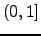

Next: 5. Scripting Up: Configuring and extending Ion3 Previous: 3. Basic configuration Contents Index
This chapter first gives in section 4.1 a general outline of how drawing engines are used, of style specifications and then in section 4.2 describes how to specify styles for the default drawing engine. Some additional settings and user attributes are explained in Sections 4.3.
Ion's drawing routines are abstracted into so-called drawing engine modules that can, again depending on the system, be dynamically loaded as needed. The drawing engine modules provide ``brushes'' that objects can use to draw some high-level primitives such as borders and text boxes (in addition to simple text and rectangle drawing) on their windows and configure e.g. the shape and background of the window. While the drawing engines therefore do not directly implement looks for each possible object (that would hardly be maintainable), different brush styles can be used to give a distinctive look to different objects and engines could interpret some styles as special cases. Style specifications are strings of the form
element1-element2-...-elementn
An example of such a style specification is `tab-frame'; see the table in subsection 4.1.1 for more styles.
When an object asks for a brush of certain style, the selected drawing engine will attempt to find the closest match to this specification. The styles/brushes defined by the drawing engines may have asterisks (`*') as some of the elements indicating a match to anything. Exact matches are preferred to asterisk matches and longer matches to shorter. For example, let a brush for style `foo-bar-baz' be queried, then the following brushes are in order of preference:
foo-bar-baz foo-*-baz foo-bar *
Some of the drawing primitives allow extra attributes to be specified, also in the form
attr1-attr2-...-attrnThese extra attributes are called substyles and allow, for example, the state of the object to be indicated by different colour sets while keeping the interface at an abstract level and the drawing engine completely ignorant of the semantics - only the writer of the drawing engine configuration file has to know them. However the drawing engine can again interpret known substyles as special cases and the default engine indeed does so with frame tab tag and drag states.)
| Style name | Description |
| `frame' | Style for frames. Substyle attributes: `active'/`inactive' (mutually exclusive), and `quasiactive'. A frame is ``quasiactive'' when an active region has a back-link to it, such as a detached window. |
| `frame-tiled' | A more specific style for tiled frames. Substyle attributes as for `frame'. |
| `frame-tiled-alt' | An alternative style for tiled frames. Often used to disable the tab-bar. |
| `frame-floating' | A more specific style for floating frames. |
| `frame-transient' | A more specific style for frames containing transient windows. |
| Style name | Description |
| `tab' | Style for frames' tabs and menu entries. Substyle attributes: `active'/`inactive' and `selected'/`unselected' |
| `tab-frame' | A more specific style for frames' tabs. Additional substyle attributes include those of the `frame' style, as well as tab-specific `tagged'/`not_tagged', `dragged'/`not_dragged', and `activity'/`no_activity'. |
| `tab-frame-tiled', | |
| `tab-frame-tiled-alt', | |
| `tab-frame-floating', | |
| `tab-frame-transient' | More specific styles for frames in the different modes. |
| `tab-menuentry' | A more specific style for entries in WMenus. Additional substyle attributes include `submenu' and occasionally also `activity' is used. |
| `tab-menuentry-bigmenu' | An alternate style for entries in WMenus. |
| `tab-info' | Extra information tab (displayed e.g. for tagged workspaces). |
| Style name | Description |
| `input' | A style for WInputs. |
| `input-edln' | A more specific style for WEdlns. Substyle attributes: `selection' for selected text and `cursor' for the cursor indicating current editing point. |
| `input-message' | A more specific style for WMessages. |
| `input-menu' | A more specific style for WMenus. |
| `input-menu-bigmenu' | An alternate style for WMenus. |
| `moveres_display' | The box displaying position/size when moving or resizing frames. |
| `actnotify' | Actification notification box. |
| `stdisp' | Any status display. |
| `stdisp-dock' | The dock. |
| `stdisp-statusbar' | The statusbar. Substyles include: the name of any monitor/meter (such as `date'), and the supplied hint. Typical hints are: `normal', `important', and `critical'. |
Drawing engine style files are usually named look_foo.lua where foo is the name of the style. The file that Ion loads on startup or when gr.read_config is called, however, is look.lua and should usually be symlinked to or a copy of of some look_foo.lua.
The first thing to do in a style file is to choose the drawing engine, possibly loading the module as well. This is done with the following chunk of code.
if not gr.select_engine("de") then
return
end
The gr.select_engine function sees if the engine given as argument is registered (the default drawing engine is simply called ``de''). If the engine could not be found, it tries to load a module of the same name. If the engine still is not registered, gr.select_engine returns `false' and in this case we also exit the style setup script. If the engine was found, gr.select_engine sees that further requests for brushes are forwarded to that engine and returns `true'.
Before defining new styles it may be a good idea to clear old styles from memory so if the old configuration defines more specific styles than the new, the old styles don't override those specified by the new configuration. That can be done by calling
de.reset()
After this the new styles can be defined with de.defstyle as explained in the next subsection. Finally, after the styles have been defined we must ask objects on the screen to look up new brushes to reflect the changes in configuration. This is done with
gr.refresh()
Styles for the default drawing engine are defined with the function de.defstyle. It has two arguments the first being a style specification as explained in previous sections and the second a table whose fields describe the style:
de.defstyle("some-style", {
attribute = value,
...
})
The supported attributes are described in tables below. The different border elements and styles referred to there are explained in Figure 4.1.
Elevated: Inlaid: Ridge: Groove: hhhhhhhhhhhs ............ hhhhhhhhhhhs sssssssssssh h..........s .sssssssssh. h..........s s..........h h. .s .s h. h.sssssssh.s s.hhhhhhhs.h h. .s .s h. h.s h.s s.h s.h h. .s .s h. h.shhhhhhh.s s.hsssssss.h h..........s .shhhhhhhhh. h..........s s..........h hsssssssssss ............ hsssssssssss shhhhhhhhhhh h = highlight, s = shadow, . = padding |
Each of these fields a string of the form that can be passed to XAllocNamedColor. Valid strings are e.g. hexadecimal RGB specifications of the form #RRGGBB and colour names as specified in /usr/X11R6/lib/X11/rgb.txt (exact path varying).
| Field | Description |
| highlight_colour | Colour for the ``highlight'' part of a border. |
| shadow_colour | Colour for the ``shadow'' part of a border. |
| foreground_colour | Colour for the normal drawing operations, e.g. text. |
| background_colour | Window background colour (unless transparency is enabled) and background colour boxes. |
| padding_colour | Colour for the ``padding'' part of a border border. Set to background_colour if unset. |
All other fields below except border_style are non-negative integers indicating a number of pixels.
| Field | Description |
| border_style | A string indicating the style of border; one of `elevated'/`inlaid'/`ridge'/`groove' as seen in the above sketch. |
| border_sides | A string indicating which sides of the border to draw: `all'/`tb'/`lr' for all, top and bottom, and left and right. To control between left/right and top/bottom, use the pixel options below. |
| highlight_pixels | Width of the highlight part of the border in pixels. |
| shadow_pixels | Width of the shadow part of the border in pixels. |
| padding_pixels | Width of the padding part of the border in pixels. |
| spacing | Space to be left between all kinds of boxes. |
| Field | Description |
| font | Font to be used in text-drawing operations; standard X font name. |
| text_align | How text is to be aligned in text boxes/tabs; one of the strings `left'/`right'/`center'. |
| Field | Description |
| transparent_background | Should windows' that use this style background be transparent? true/false. |
| based_on | The name of a previously defined style that this style should be based on. |
As discussed in previous sections, styles may have substyles to e.g. indicate different states of the object being drawn. The ``de'' engine limits what can be configured in substyles to the set of colours in the first table above, but also specifically interprets for the main style `tab-frame' the substyles `*-*-tagged' and `*-*-*-dragged' by, respectively, drawing a right angle shape at the top right corner of a tab and by shading the tab with a stipple pattern. Also for menus the substyles `*-*-submenu' are handled as a special case.
Substyles are defined with the function de.substyle within the table defining the main style. The parameters to this function are similar to those of de.defstyle.
de.defstyle("some-style", {
...
de.substyle("some-substyle", {
...
}),
...
})
The following shortened segment from look_cleanviolet.lua should help to clarify the matters discussed in the previous subsection.
de.defstyle("*", {
-- Gray background
highlight_colour = "#eeeeee",
shadow_colour = "#eeeeee",
background_colour = "#aaaaaa",
foreground_colour = "#000000",
shadow_pixels = 1,
highlight_pixels = 1,
padding_pixels = 1,
spacing = 0,
border_style = "elevated",
font = "-*-helvetica-medium-r-normal-*-12-*-*-*-*-*-*-*",
text_align = "center",
})
de.defstyle("tab-frame", {
based_on = "*",
de.substyle("active-selected", {
-- Violet tab
highlight_colour = "#aaaacc",
shadow_colour = "#aaaacc",
background_colour = "#666699",
foreground_colour = "#eeeeee",
}),
-- More substyles would follow ...
})
The function WFrame.set_grattr may be used to give frames (and their tabs) arbitrary extra attributes to be passed to the drawing engine. Hence, by configuring such substyles in the style configuration files, and turning on the attribute when needed, scripts may display visual cues related to the frame. There is also one extra attribute specially interpreted by the default drawing engine: the `numbered' attribute, which causes numbers to be displayed on the tabs.
The following style fields are independent of the drawing engine used, but are related to objects' styles and therefore configured in the drawing engine configuration file.
| Field | Description |
| bar | Controls the style of the tab-bar. Possible values are the strings `none', `inside', `outside' and `shaped', with the last providing the PWM-style tab-bars for floating frames. |
| floatframe_tab_min_w | Minimum tab width in pixels for the shaped style, given that this number times number of tabs doesn't exceed frame width. |
| floatframe_bar_max_w_q | Maximum tab-bar width quotient of frame width for the shaped styles. A number in the interval . |
| Field | Description |
| outline_style | How borders are drawn: `none' - no border, `all' - border around whole dock, `each' - border around each dockapp. |
| tile_size | A table with entries `width' and `height', indicating the width and height of tiles in pixels. |
Hopefully that's enough to get you started in writing new style configuration files for Ion. When in doubt, study the existing style configuration files.